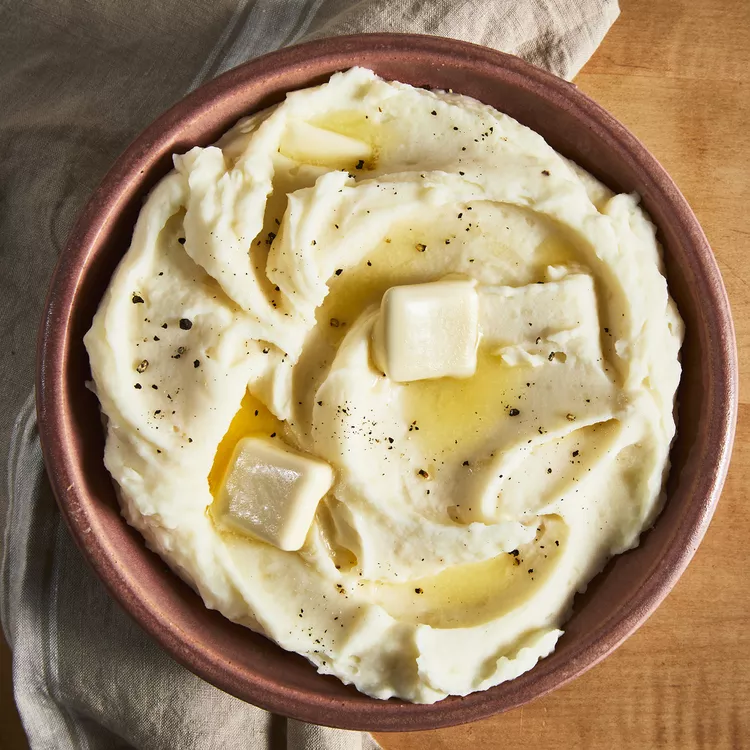

Basic Mashed Potatoes

Mashed Potatoes
Cook time -35 mins-
Good, old-fashioned, milk and butter, mashed potatoes.
Ingredients
2 pounds baking potatoes, peeled and quartered
3 cloves garlic, peeled, or to taste (Optional)
1 cup milk
2 tablespoons butter
salt and ground black pepper to taste
Directions
- Bring a large pot of salted water to a boil. Add potatoes and garlic, lower heat to medium, and simmer until potatoes are tender, 15 to 20 minutes.
- When the potatoes are almost finished, heat milk and butter in a small saucepan over low heat until butter is melted.
- Drain potatoes and return to the pot. Slowly add warm milk mixture, blending it in with a potato masher or electric mixer until potatoes are smooth and creamy. Season with salt and pepper.